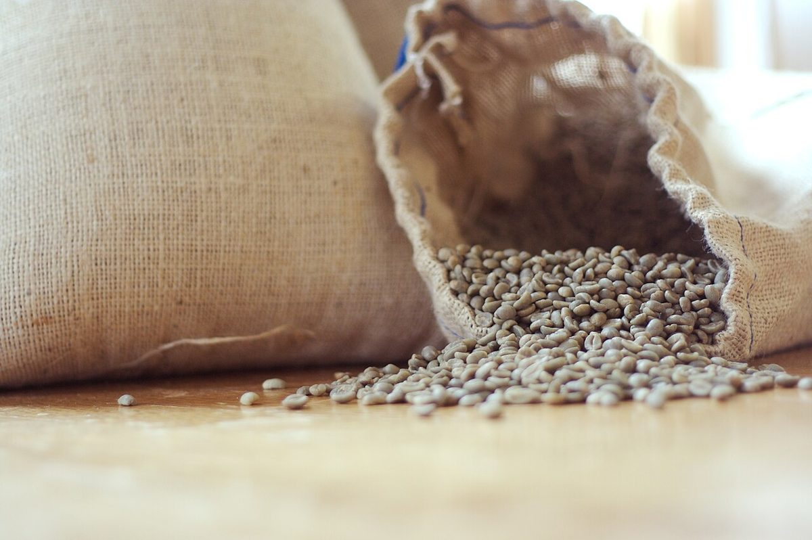

みず
コーヒーを淹れる水を連想した、水面の写真。


制作側の連想
このページのテーマは「み札三枚」です。屋号の綴りから「み」という音を連想し、「み」と読める漢字のうち「水」「実」「味」を三枚の札に見立てて、写真を並べました。屋号の由来は分かりません。お店の理念・由来とは無関係の、制作側の連想です。
三枚の札(写真はすべてイメージ)
コーヒーを淹れる水を連想した、水面の写真。
豆はコーヒーの木の実の種。生豆と焙煎豆の写真。


カップに注がれた一杯を連想した写真。


ご案内
| 所在地 | 〒849-0316 佐賀県小城市芦刈町道免595-1 |
|---|---|
| 電話 | なし |
| 営業時間 | 準備中 |
| 定休日 | 準備中 |
| ご予約 | 準備中 |
| 駐車場 | 準備中 |
| SNS | Instagram @miicoffee_official |